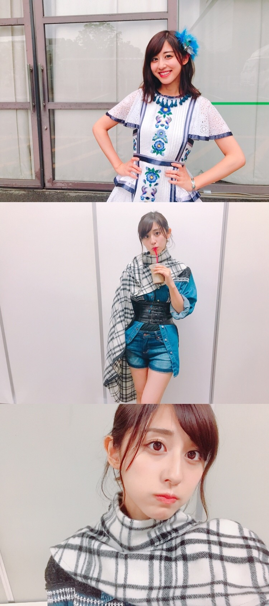
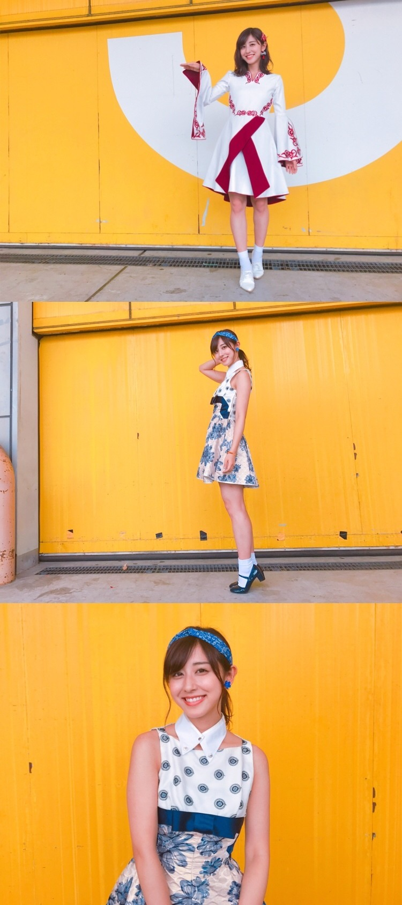
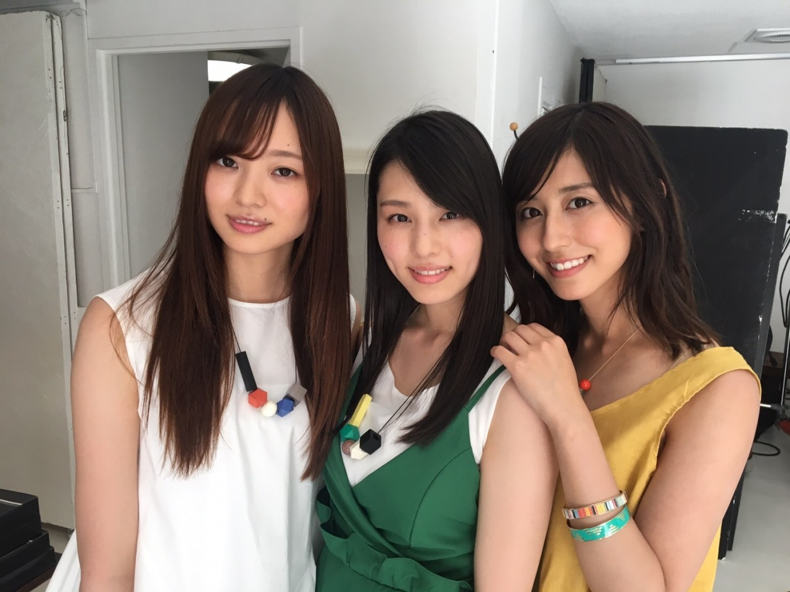

| 2017/07 17 Mon | 斎藤ちはる 歌唱衣装。 |
ちはるーむへようこそ
京都、名古屋にて
アルバム個別握手会でした〜！
久しぶりに皆さんとお会いできて、
沢山お話しができて、楽しかったなっ
振替で来てくれた方も多くて...
本当にありがとうございますm(_ _)m
皆さん一人一人の言葉が力になっています。
温かい気持ち、嬉しかったです。
そしてアルバム個握ならでは...
楽曲ごとの歌唱衣装を着ての握手！
ライブでしか着たことなかったり、
逆にMVだけしか着たことなかったり...
レアな衣装を着られました〜◎
ぷく。
普段なかなか付けられていないアクセサリー多数。
このイヤリングも初めて！
◎京都 4部
裸足でSUMMER
◎京都 5部
ブランコ

夏らしいハダサマと、
カッコいいブランコ。
ブランコは一人一人違うから余計にレアな気がするね〜
私はお腹の太ベルトがポイント
◎名古屋 1部
サヨナラの意味
◎名古屋 2部
シークレットグラフィティー

サヨナラの意味の↑の写真のポーズ...
何でしょうか☺︎？
(分かったら...凄い！かな？)
サヨナラも、シークレットも、
好きな衣装ランキング上位に入ってくる！
可愛いよね〜
嬉しくて楽しくて沢山写真撮ったので
表情×画角違いで今後も載せていきますね...
来週の幕張では何を着ようかな☺︎
----------＊
7/24、雑誌「B.L.T.」さんに
伊織とうめみなちゃんと３人で載せていただいています〜！！
1期生×2期生×3期生、
それぞれの長身メンバーでの撮影。
新鮮でした〜楽しかったね( ◦˙ ˙◦ )

3期生との撮影は初めてだったよ〜！
うめみなちゃん(この呼び方流行りますように♡)、可愛いかったな〜
夏らしいページになってると思います！
お楽しみに
--------------＊
前回のブログのコメントに、
沢山の方が温かいメッセージをくださって
とっても嬉しいです。
感謝の気持ちでいっぱいです。
私一人じゃないんだな、
支えてくれている方がこんなにもいるんだな、
って改めて気づく事が出来ました。
私なりにこれからも頑張っていきます。
不器用ながらも、前向きに...
斎藤ちはる